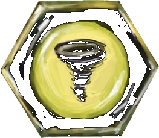
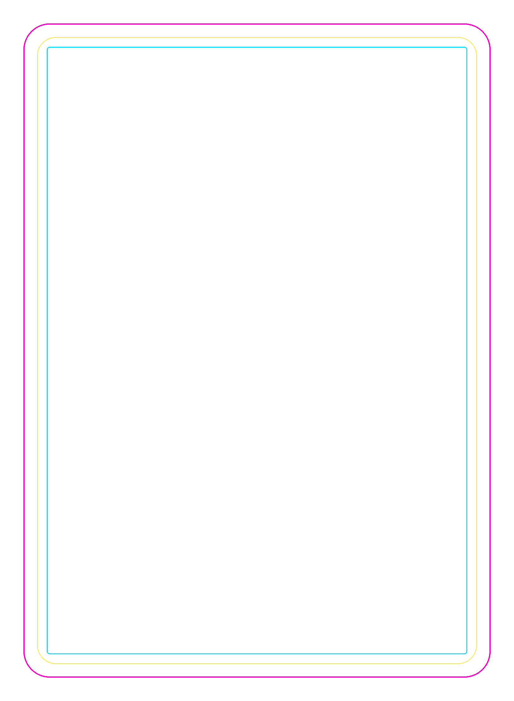
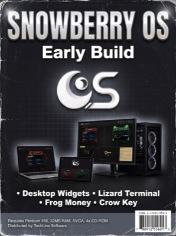
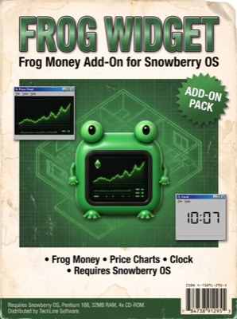
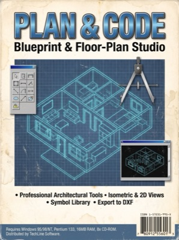

One element, one animal, one colour
Every column of the deck belongs to a faction. Its colour runs through the marble border, the gem emblem and both corner marbles. Tap a card to open it in the inspector.
Three tools, one deck
Deck Editor
The full 7×7 deck live on canvas. Drag (or tap) artwork between cards and it recolours to its new element. Export deck sheets and arrangement.json.
Card Inspector
Any card at print resolution with trim, safe-area and art-window guides. Check bleed, flip light/dark, download a 600 DPI PNG.
Marble Gallery
All 98 procedural glass orbs — one swirl per card and slot — filterable by faction, with a 3D tilt viewer.
From line art to print
Five Python stages turn sketches into press-ready files. Full story in MAKING-OF.md; the marble shader is in MARBLE-RECIPE.md.
Plan
49 cards on a 7×7 grid: categories × elements, art pre-fit into the window.
Borders
Procedural polished marble frames, colour-ramped per faction at 600 DPI.
Marbles
A 9-layer glass shader, seeded per card. Symbol on top, number below.

Assembly
Layered Krita files where every paint layer clips to its shape.

Review
Contact sheets and this site render the exact assets that print.
More from Frog-dex
Every box on the Spirit Strikers software shelf. Put the discs in the terminal at the Terrace World library.
 Terrace World
Terrace World

Snowberry OS Lizard Widget
Lizard Widget
Frog Widget 3D Models Pack
3D Models Pack

Plan & Code Krita Agent
Krita Agent
 Card Forge
Card Forge